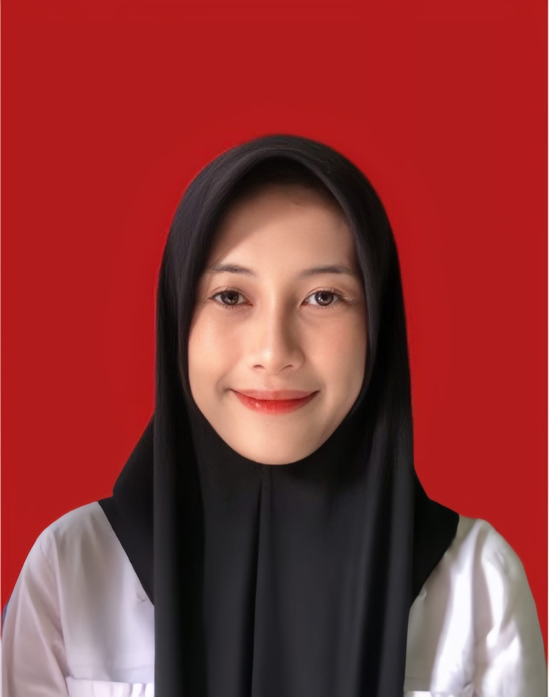

Tentang Saya

Nadhifa Zahra Syaifi
Halo! Saya Nadhifa Zahra Syaifi, mahasiswa Program Studi S1 Teknik Informatika di Universitas Islam Negeri Sunan Gunung Djati Bandung. Saya sedang menempuh perkuliahan pada tahun akademik 2026/2027 semester Ganjil.
Saya tertarik untuk terus mengembangkan kemampuan di bidang teknologi informasi, khususnya dalam pengembangan perangkat lunak dan teknologi web.
Biodata
Informasi Akademik
- Nama: Nadhifa Zahra Syaifi
- NIM: 1247050020
- Program Studi: S1 Teknik Informatika
- Universitas: UIN Sunan Gunung Djati Bandung
- Tahun Akademik: 2026/2027 Ganjil
- IP Semester Lalu: 3.87
Informasi universitas dapat dilihat melalui website resmi UIN Sunan Gunung Djati Bandung .
Mata Kuliah Semester Ini
Daftar mata kuliah berdasarkan Kartu Rencana Studi semester Ganjil 2026/2027.
| No. | Kode | Mata Kuliah | Kelas | SKS | Semester | Hari & Waktu |
|---|---|---|---|---|---|---|
| 1 | 20100470501024 | Manajemen Basis Data | C | 3 | 5 | Rabu, 07:00–09:30 |
| 2 | 20100470501026 | Jaringan Komputer | C | 3 | 5 | Kamis, 09:30–12:00 |
| 3 | 20100470501030 | Pengembangan Aplikasi Web | C | 3 | 5 | Kamis, 12:40–15:10 |
| 4 | 20100470501032 | Interaksi Manusia dan Komputer | C | 3 | 5 | Jumat, 12:40–15:10 |
| 5 | 20100470501033 | Intelegensia Buatan | C | 3 | 5 | Jumat, 12:40–15:10 |
| 6 | 20100470501034 | Manajemen Proyek Perangkat Lunak | C | 3 | 5 | Senin, 12:40–15:10 |
| 7 | 20100470501028 | Pengembangan Aplikasi Mobile | C | 3 | 5 | Selasa, 12:40–15:10 |
| 8 | 20100470503005 | ICT dan Islam | C | 2 | 7 | Selasa, 10:20–12:00 |
| Jumlah SKS | 23 SKS | |||||
Kontak
Untuk informasi lebih lanjut mengenai profil saya, silakan menghubungi saya melalui media komunikasi yang tersedia.
Tugas
1. CampusTask - Manajemen Tugas Kuliah
CampusTask merupakan aplikasi web yang saya kembangkan sebagai proyek pembelajaran Pengembangan Aplikasi Web. Aplikasi ini membantu mahasiswa mengelola tugas kuliah, mulai dari menambahkan, mengedit, menghapus, hingga menandai tugas yang sudah selesai.
Aplikasi ini dikembangkan menggunakan TypeScript, Vite, HTML, dan CSS.
Buka Aplikasi CampusTask Repository GitHub